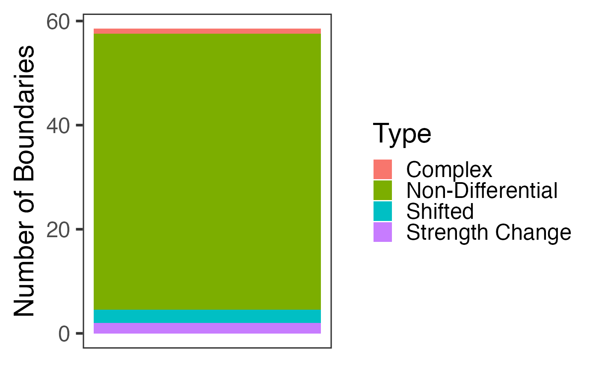
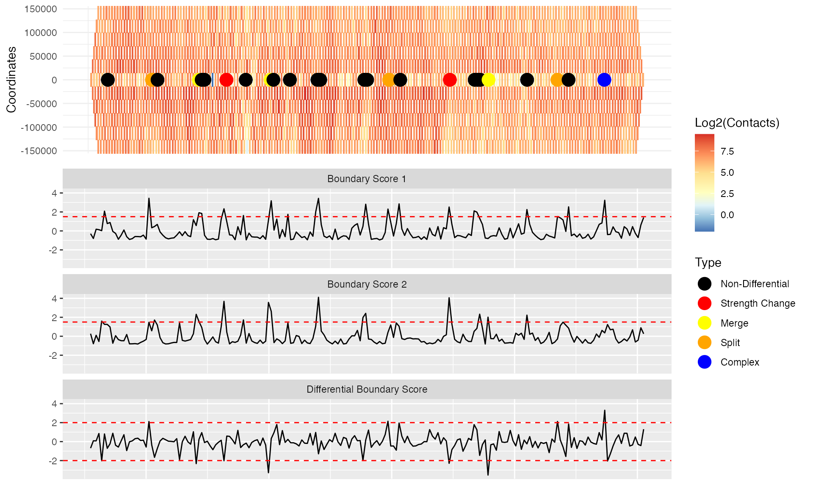
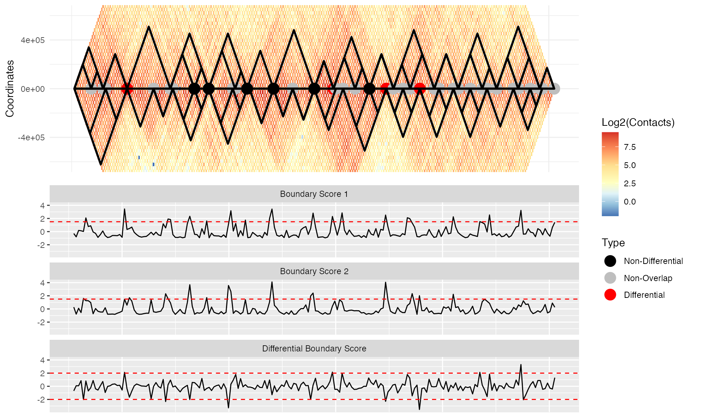
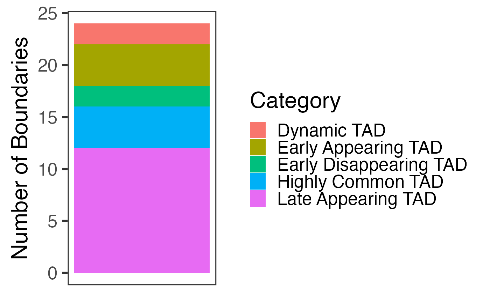

vignettes/TADCompare.Rmd
TADCompare.Rmd
BiocManager::install("TADCompare")
# Or, for the developmental version
devtools::install_github("dozmorovlab/TADCompare")##
## Attaching package: 'dplyr'## The following objects are masked from 'package:stats':
##
## filter, lag## The following objects are masked from 'package:base':
##
## intersect, setdiff, setequal, union
library(SpectralTAD)
library(TADCompare)TADCompare is a function that allows users to automatically identify differential TAD boundaries between two datasets. For each differential boundary, we provide unique classification (complex, merge, split, shifted, and strength change) defining how the TAD boundaries change between the datasets.
The only required input is two contact matrices in one of the permitted forms specified in the Input data vignette. TADCompare function will automatically determine the type of matrix and convert it to an appropriate form, given it is one of the supported formats. The only requirement is that all matrices be in the same format. For the fastest results, we suggest using \(n \times n\) matrices. Additionally, we recommend users to provide resolution of their data. If the resolution is not provided, we estimate it using the numeric column names of contact matrices. We illustrate running TADCompare using the data from GM12878 cell line, chromosome 22, 50kb resolution (Suhas S. P. Rao et al. 2014).
# Get the rao contact matrices built into the package
data("rao_chr22_prim")
data("rao_chr22_rep")
# We see these are n x n matrices
dim(rao_chr22_prim)## [1] 704 704
dim(rao_chr22_rep)## [1] 704 704
# And, get a glimpse how the data looks like
rao_chr22_prim[100:105, 100:105]## 2.1e+07 21050000 21100000 21150000 21200000 21250000
## 2.1e+07 6215 1047 1073 714 458 383
## 21050000 1047 4542 2640 1236 619 489
## 21100000 1073 2640 13468 4680 1893 1266
## 21150000 714 1236 4680 13600 4430 2124
## 21200000 458 619 1893 4430 11313 4465
## 21250000 383 489 1266 2124 4465 11824
# Running the algorithm with resolution specified
results = TADCompare(rao_chr22_prim, rao_chr22_rep, resolution = 50000)
# Repeating without specifying resolution
no_res = TADCompare(rao_chr22_prim, rao_chr22_rep)## Estimating resolution
# We can see below that resolution can be estimated automatically if necessary
identical(results$Diff_Loci, no_res$Diff_Loci)## [1] TRUETADCompare function returns a list with two data frames and one plot. The first data frame contains all regions of the genome containing a TAD boundary in at least one of the contact matrices. The results are shown below:
head(results$TAD_Frame)## Boundary Gap_Score TAD_Score1 TAD_Score2 Differential Enriched_In
## 1 16300000 -18.6589859 0.7698503 7.704411 Differential Matrix 2
## 2 16850000 0.2361100 7.8431724 7.580056 Non-Differential Matrix 1
## 3 17350000 0.9683905 3.6628411 3.220253 Non-Differential Matrix 1
## 4 18000000 -0.1033894 2.3616107 2.347392 Non-Differential Matrix 2
## 5 18750000 3.0426660 4.7997622 3.558975 Differential Matrix 1
## 6 18850000 2.6911660 3.7674844 2.680707 Differential Matrix 1
## Type
## 1 <NA>
## 2 Non-Differential
## 3 Non-Differential
## 4 Non-Differential
## 5 Strength Change
## 6 Strength ChangeThe “Boundary” column contains genomic coordinates of the given boundary. “Gap_Score” corresponds to the differential boundary score (Z-score of the difference between boundary scores). “TAD_Score1” and “TAD_Score2” corresponds to the boundary score of the two contact matrices. “Differential” simply indicates whether the boundary is differential or not differential. “Enriched_In” indicates which matrix contains the TAD boundary. “Type” identifies the type of TAD boundary change. Note: The first boundary will always be classified as “NA” since specific classification is impossible without a reference boundary to the left and right.
The second data frame contains the same information as the first data frame but includes every region of the genome. We show it below:
head(results$Boundary_Scores)## Boundary TAD_Score1 TAD_Score2 Gap_Score Differential Enriched_In
## 1 16300000 0.7698503 7.7044114 -18.658985912 Differential Matrix 2
## 2 16850000 7.8431724 7.5800558 0.236110024 Non-Differential Matrix 1
## 3 16900000 -0.4402121 -0.4337948 0.009161239 Non-Differential Matrix 1
## 4 16950000 -0.7460531 -0.5551327 -0.467725582 Non-Differential Matrix 2
## 5 17000000 -0.6803509 -0.6512025 -0.037456910 Non-Differential Matrix 2
## 6 17050000 -0.6626352 -0.5562997 -0.245694062 Non-Differential Matrix 2
## Type
## 1 <NA>
## 2 Non-Differential
## 3 Non-Differential
## 4 Non-Differential
## 5 Non-Differential
## 6 Non-DifferentialFinally, we include a plot that contains a stacked barplot indicating the prevalence of each type of TAD boundary. The barplot is a ggplot2 object, making it completely customizable. We show this below:
p <- results$Count_Plot
class(p)## [1] "gg" "ggplot"
plot(p)## Warning: Removed 1 rows containing missing values (position_stack).
We recognize that users may like to use their own TAD caller for the identification of TAD boundaries prior to boundary comparison. As a result, we provide the option for pre-specification of TADs in a form of two data frames with chromosome, start, and end coordinates of TAD boundaries for the two contact matrices. With this option, only provided TAD boundaries will be tested. We provide an example below using the SpectralTAD TAD caller (Cresswell, Stansfield, and Dozmorov 2019):
# Call TADs using SpectralTAD
bed_coords1 = bind_rows(SpectralTAD::SpectralTAD(rao_chr22_prim, chr = "chr22", levels = 3))## Estimating resolution## Warning: Unknown or uninitialised column: `Group`.
## Warning: Unknown or uninitialised column: `Group`.
bed_coords2 = bind_rows(SpectralTAD(rao_chr22_rep, chr = "chr22", levels = 3))## Estimating resolution
# Combining the TAD boundaries for both contact matrices
Combined_Bed = list(bed_coords1, bed_coords2)
# Printing the combined list of TAD boundariesAbove, we see the dataset output by SpectralTAD contains a column named “start” and “end” indicating the start and end coordinate of each TAD. This is required, though the output of any TAD caller can be used effectively with some data manipulation. The “Level” column indicates the level of TAD in a hierarchy.
# Running TADCompare with pre-specified TADs
TD_Compare = TADCompare(rao_chr22_prim, rao_chr22_rep, resolution = 50000, pre_tads = Combined_Bed)
# Returning the boundaries
head(TD_Compare$TAD_Frame)## Boundary Gap_Score TAD_Score1 TAD_Score2 Differential Enriched_In
## 1 16850000 0.23611002 7.8431724 7.5800558 Non-Differential Matrix 1
## 2 17250000 -0.08875306 0.1103987 0.1409999 Non-Differential Matrix 2
## 3 17600000 -0.06733403 -0.4153272 -0.3809658 Non-Differential Matrix 2
## 4 18000000 -0.10338944 2.3616107 2.3473922 Non-Differential Matrix 2
## 5 18350000 -0.04284963 -0.7767081 -0.7433986 Non-Differential Matrix 2
## 6 19100000 0.01857312 -0.8269469 -0.8153997 Non-Differential Matrix 1
## Type
## 1 Non-Overlap
## 2 Non-Overlap
## 3 Non-Overlap
## 4 Non-Differential
## 5 Non-Differential
## 6 Non-Overlap
# Testing to show that all pre-specified boundaries are returned
table(TD_Compare$TAD_Frame$Boundary %in% bind_rows(Combined_Bed)$end) ##
## TRUE
## 94Here, we see that the only boundaries that are returned are those we pre-specified.
We provide means for visualizing differential TAD boundaries using the DiffPlot function. As an input, DiffPlot takes the output from the TADCompare function and the original contact matrices. As an output, it returns a ggplot2 object that can be further customized. We demonstrate visualization of the differences between GM12878 and IMR90 cell lines, on the subset of chromosome 2, 40kb resolution data processed in Schmitt et al. (Schmitt et al. 2016):
data("GM12878.40kb.raw.chr2")
data("IMR90.40kb.raw.chr2")
mtx1 <- GM12878.40kb.raw.chr2
mtx2 <- IMR90.40kb.raw.chr2
res <- 40000 # Set resolution
# Globally normalize matrices for better visual comparison (does not affect TAD calling)
mtx1_total <- sum(mtx1)
mtx2_total <- sum(mtx2)
(scaling_factor <- mtx1_total / mtx2_total)## [1] 0.3837505
# Rescale matrices depending on which matrix is smaller
if (mtx1_total > mtx2_total) {
mtx2 <- mtx2 * scaling_factor
} else {
mtx1 <- mtx1 * (1 / scaling_factor)
}
# Coordinates of interesting regions
start_coord <- 8000000
end_coord <- 16000000
# Another interesting region
# start_coord <- 40000000
# end_coord <- 48000000
# Running TADCompare as-is
TD_Compare <- TADCompare(mtx1, mtx2, resolution = res)
# Running the plotting algorithm with pre-specified TADs
p <- DiffPlot(tad_diff = TD_Compare,
cont_mat1 = mtx1,
cont_mat2 = mtx2,
resolution = res,
start_coord = start_coord,
end_coord = end_coord,
show_types = TRUE,
point_size = 5,
max_height = 5,
rel_heights = c(1, 2),
palette = "RdYlBu")
plot(p)
From these results, we can see that boundary scores from both matrices (“Boundary score 1” and “Boundary score 2”) frequently detected as significant boundaries in both matrices (boundary scores above the 1.5 threshold), but are non-differential (black dots). The differential boundaries correspond to the “Differential boundary score” track, where absolute boundary score differences above the 2.0 threshold are detected. The different types of differential boundaries are defined according to a schema described in the TADCompare manuscript. Note that coloring by types may be disabled by setting “show_types” to FALSE; only differential and non-differential labels will be shown.
We can also use pre-specified TADs by providing a list of TAD coordinates containing TAD boundaries for each contact matrix. The list should be of length 2. We show how to do this below, using SpectralTAD for pre-specification:
# Call TADs using SpectralTAD
bed_coords1 = bind_rows(SpectralTAD(mtx1, chr = "chr2", levels = 3))## Estimating resolution
bed_coords2 = bind_rows(SpectralTAD::SpectralTAD(mtx2, chr = "chr2", levels = 3))## Estimating resolution
# Placing the data in a list for the plotting procedure
Combined_Bed = list(bed_coords1, bed_coords2)
# Running TADCompare with pre-specified TADs
TD_Compare <- TADCompare(mtx1, mtx2, resolution = res, pre_tads = Combined_Bed)
# Running the plotting algorithm with pre-specified TADs
p <- DiffPlot(tad_diff = TD_Compare,
cont_mat1 = mtx1,
cont_mat2 = mtx2,
resolution = res,
start_coord = start_coord,
end_coord = end_coord,
pre_tad = Combined_Bed,
show_types = FALSE,
point_size = 5,
max_height = 10,
rel_heights = c(1.5, 2),
palette = "RdYlBu")
plot(p)
As we can see, the pre-specification of TADs allows us to outline TAD boundaries enhancing visualization. Additionally, the differential boundaries presented now correspond to those called by the TAD caller as opposed to those detected by TADCompare using boundary scores. Note that the pre-specified TAD boundaries do not necessarily correspond to the boundary scores; consequently, the classification schema is applied with respect to the pre-specified TAD boundaries. Howevery, using pre-specified TADs makes it is easier to visually interpret the differences of the differences. Therefore, we recommend setting “show_types” to FALSE. Additionally, for the pre-specified TADs, a new category is introduced, called “Non-Overlap.” Non-Overlap corresponds to boundaries that are determined to be non-differential by TADCompare but do not overlap when called by the TAD caller.
TimeCompare is a function for the time-course analysis of data. Briefly, a user inputs a list of contact matrices representing at least four time points. The TimeCompare function will run with fewer time points, but the classification of temporal changes may be incorrect. The output is a data frame containing all regions with TAD boundaries detected in at least one time point. These regions are further classified into six separate types of temporal changes (Highly common, dynamic, early/late appearing, and early/late disappearing) based on how TAD boundaries evolve over time. The function also returns a plot summarizing the occurrence of each TAD boundary and another data frame containing a summary of change at each region, regardless of whether a boundary was detected.
TimeCompare function takes a list of matrices similar in format to TADCompare function. Like TADCompare, TimeCompare function will estimate resolution and convert matrices to the appropriate format. For this example, we use time-varying sparse 3-column contact matrices from (Suhas S. P. Rao et al. 2017), representing the HCT-116 cell line. The matrices represent a single chromosome 22 cell sample treated with TAD boundary destroying auxin. The data is then sequenced at four time points (20, 40, 60, and 180 minutes) after the withdrawal of auxin. Once auxin is withdrawn, the TAD boundaries slowly return. Using TimeCompare function, we can track the return of TADs after withdrawal.
## # A tibble: 6 x 3
## X1 X2 X3
## <dbl> <dbl> <dbl>
## 1 16050000 16050000 14
## 2 16100000 16100000 3
## 3 16200000 16200000 1
## 4 16250000 16250000 1
## 5 16300000 16300000 10
## 6 16350000 16350000 2
# These are sparse 3-column matrices
# Running MultiCompare
time_var <- TimeCompare(time_mats, resolution = 50000)## Converting to n x n matrix## Matrix dimensions: 704x704
## Matrix dimensions: 704x704
## Matrix dimensions: 704x704
## Matrix dimensions: 704x704The first item returned by TimeCompare function is TAD_Bounds, a data frame containing all regions that contain a TAD boundary detected in at least one time point:
head(time_var$TAD_Bounds)## Coordinate Sample 1 Sample 2 Sample 3 Sample 4 Consensus_Score
## 1 16900000 -0.6733709 -0.7751516 -0.7653696 15.1272252 -0.71937026
## 2 17350000 3.6406563 2.3436229 3.0253018 0.7840556 2.68446232
## 3 18850000 0.6372268 6.3662244 -0.7876844 6.9255446 3.50172562
## 4 20700000 1.5667926 3.0968633 2.9130479 2.8300136 2.87153075
## 5 22000000 -1.0079676 -0.7982571 0.6007264 3.1909178 -0.09876534
## 6 22050000 -1.0405532 -0.9892242 -0.2675822 4.2737511 -0.62840320
## Category
## 1 Late Appearing TAD
## 2 Early Disappearing TAD
## 3 Early Appearing TAD
## 4 Dynamic TAD
## 5 Late Appearing TAD
## 6 Late Appearing TADThe first column corresponds to genomic coordinates. The columns beginning with the “Sample” prefix correspond to the boundary score at the given coordinate in each sample. The consensus score is simply the median score across all samples, and the category corresponds to the type of change.
All_Bounds is the second list entry and is identical in structure to the TAD_Bounds data frame, but it includes every region of the genome regardless of whether it is a TAD or not.
head(time_var$All_Bounds)## Coordinate Sample 1 Sample 2 Sample 3 Sample 4 Consensus_Score
## 1 16900000 -0.6733709 -0.7751516 -0.7653696 15.1272252 -0.7193703
## 2 16950000 -0.6343671 -0.6624276 -0.4107173 -0.6656620 -0.6483973
## 3 17000000 -1.0409280 -0.7618272 0.7910678 -1.0008876 -0.8813574
## 4 17050000 -0.9199917 -0.7123180 0.6712399 -0.8254422 -0.7688801
## 5 17100000 -0.6097913 -0.4785485 -0.6232367 -0.2095729 -0.5441699
## 6 17150000 -0.7215028 -0.5669957 0.2413230 -0.6332710 -0.6001333
## Category
## 1 Late Appearing TAD
## 2 Highly Common TAD
## 3 Highly Common TAD
## 4 Highly Common TAD
## 5 Highly Common TAD
## 6 Highly Common TADWe also include a stacked barplot that includes the number of times each type of temporal boundary occurs in the data. This plot is created in ggplot2 and fully customizable.
time_var$Count_Plot
ConsensusTADs function implements an approach for calling TADs across multiple datasets. It uses the median boundary score across \(n\) replicates or cell lines to calculate a consensus of TAD boundaries, that is, consistently detected across replicates. This effectively filters out noisy TAD boundaries that may appear in only one or a few replicates or cell lines.
ConsensusTADs function takes essentially the same input as the TimeCompare function (a list of contact matrices). It provides consensus TAD scores for each region, summarized across each contact matrix of the genome. It also provides a list of regions with significant TAD scores. These regions can be thought of as consensus TAD boundaries. Using these, we can get a single set of TADs summarized across a set of replicates, conditions, or time points. For this example, we use the two replicates from (Suhas S. P. Rao et al. 2014).
We demonstrate how to run ConsensusTADs by calling consensus TADs on time-varying contact matrices created by treating a single sample with auxin, which destroys its TAD boundaries, and then tracking their return at four time points (20, 40, 60 and 180 minutes) (Suhas S. P. Rao et al. 2017). The consensus boundary score is intended to provide a summary of TAD boundaries across all time points.
# Get the rao contact matrices built into the package
data("time_mats")
# Running MultiCompare
con_tads <- ConsensusTADs(time_mats, resolution = 50000)## Converting to n x n matrix## Matrix dimensions: 704x704
## Matrix dimensions: 704x704
## Matrix dimensions: 704x704
## Matrix dimensions: 704x704ConsensusTADs returns two data frames. The first data frame, Consensus, contains all regions containing consensus TADs based on the consensus score.
head(con_tads$Consensus)## Coordinate Sample 1 Sample 2 Sample 3 Sample 4 Consensus_Score
## 1 16900000 -0.6733709 -0.7751516 -0.7653696 15.1272252 -0.71937026
## 2 17350000 3.6406563 2.3436229 3.0253018 0.7840556 2.68446232
## 3 18850000 0.6372268 6.3662244 -0.7876844 6.9255446 3.50172562
## 4 20700000 1.5667926 3.0968633 2.9130479 2.8300136 2.87153075
## 5 22000000 -1.0079676 -0.7982571 0.6007264 3.1909178 -0.09876534
## 6 22050000 -1.0405532 -0.9892242 -0.2675822 4.2737511 -0.62840320The columns correspond to the coordinate of the region with a significant boundary score, the individual boundary score for each region, and the consensus score.
The second data frame, All_Regions, is identical to the Consensus data frame, but it includes every region of the genome, which occurs in both matrices.
head(con_tads$All_Regions)## Coordinate Sample 1 Sample 2 Sample 3 Sample 4 Consensus_Score
## 1 16900000 -0.6733709 -0.7751516 -0.7653696 15.1272252 -0.7193703
## 2 16950000 -0.6343671 -0.6624276 -0.4107173 -0.6656620 -0.6483973
## 3 17000000 -1.0409280 -0.7618272 0.7910678 -1.0008876 -0.8813574
## 4 17050000 -0.9199917 -0.7123180 0.6712399 -0.8254422 -0.7688801
## 5 17100000 -0.6097913 -0.4785485 -0.6232367 -0.2095729 -0.5441699
## 6 17150000 -0.7215028 -0.5669957 0.2413230 -0.6332710 -0.6001333## R version 4.0.2 (2020-06-22)
## Platform: x86_64-apple-darwin17.0 (64-bit)
## Running under: macOS 10.16
##
## Matrix products: default
## BLAS: /Library/Frameworks/R.framework/Versions/4.0/Resources/lib/libRblas.dylib
## LAPACK: /Library/Frameworks/R.framework/Versions/4.0/Resources/lib/libRlapack.dylib
##
## locale:
## [1] en_US.UTF-8/en_US.UTF-8/en_US.UTF-8/C/en_US.UTF-8/en_US.UTF-8
##
## attached base packages:
## [1] stats graphics grDevices utils datasets methods base
##
## other attached packages:
## [1] TADCompare_1.1.1 SpectralTAD_1.4.0 dplyr_1.0.2 BiocStyle_2.16.1
##
## loaded via a namespace (and not attached):
## [1] colorspace_2.0-0 ggsignif_0.6.0
## [3] ellipsis_0.3.1 rio_0.5.16
## [5] CGHcall_2.50.0 rprojroot_2.0.2
## [7] DNAcopy_1.62.0 XVector_0.28.0
## [9] GenomicRanges_1.40.0 fs_1.5.0
## [11] rstudioapi_0.13 farver_2.0.3
## [13] ggpubr_0.4.0 listenv_0.8.0
## [15] fansi_0.4.1 HiCcompare_1.10.0
## [17] codetools_0.2-16 splines_4.0.2
## [19] R.methodsS3_1.8.1 impute_1.62.0
## [21] knitr_1.30 Rsamtools_2.4.0
## [23] broom_0.7.2 cluster_2.1.0
## [25] R.oo_1.24.0 pheatmap_1.0.12
## [27] BiocManager_1.30.10 compiler_4.0.2
## [29] backports_1.2.0 assertthat_0.2.1
## [31] Matrix_1.2-18 cli_2.2.0
## [33] limma_3.44.3 htmltools_0.5.0
## [35] tools_4.0.2 gtable_0.3.0
## [37] glue_1.4.2 GenomeInfoDbData_1.2.3
## [39] reshape2_1.4.4 Rcpp_1.0.5
## [41] carData_3.0-4 Biobase_2.48.0
## [43] cellranger_1.1.0 pkgdown_1.6.1
## [45] vctrs_0.3.5 Biostrings_2.56.0
## [47] nlme_3.1-150 QDNAseq_1.24.0
## [49] xfun_0.19 stringr_1.4.0
## [51] globals_0.13.1 openxlsx_4.2.3
## [53] lifecycle_0.2.0 gtools_3.8.2
## [55] rstatix_0.6.0 InteractionSet_1.16.0
## [57] future_1.20.1 zlibbioc_1.34.0
## [59] scales_1.1.1 hms_0.5.3
## [61] ragg_0.4.0 parallel_4.0.2
## [63] SummarizedExperiment_1.18.2 rhdf5_2.32.4
## [65] RColorBrewer_1.1-2 yaml_2.2.1
## [67] curl_4.3 memoise_1.1.0
## [69] gridExtra_2.3 ggplot2_3.3.2
## [71] CGHbase_1.48.0 stringi_1.5.3
## [73] S4Vectors_0.26.1 desc_1.2.0
## [75] BiocGenerics_0.34.0 zip_2.1.1
## [77] BiocParallel_1.22.0 GenomeInfoDb_1.24.2
## [79] rlang_0.4.8 pkgconfig_2.0.3
## [81] systemfonts_0.3.2 matrixStats_0.57.0
## [83] bitops_1.0-6 evaluate_0.14
## [85] lattice_0.20-41 purrr_0.3.4
## [87] Rhdf5lib_1.10.1 labeling_0.4.2
## [89] cowplot_1.1.0 tidyselect_1.1.0
## [91] parallelly_1.21.0 plyr_1.8.6
## [93] magrittr_2.0.1 bookdown_0.21
## [95] R6_2.5.0 IRanges_2.22.2
## [97] generics_0.1.0 DelayedArray_0.14.1
## [99] pillar_1.4.7 haven_2.3.1
## [101] foreign_0.8-80 mgcv_1.8-33
## [103] abind_1.4-5 RCurl_1.98-1.2
## [105] tibble_3.0.4 future.apply_1.6.0
## [107] PRIMME_3.1-3 crayon_1.3.4
## [109] car_3.0-10 utf8_1.1.4
## [111] KernSmooth_2.23-18 rmarkdown_2.5
## [113] readxl_1.3.1 grid_4.0.2
## [115] data.table_1.13.2 marray_1.66.0
## [117] forcats_0.5.0 digest_0.6.27
## [119] tidyr_1.1.2 R.utils_2.10.1
## [121] textshaping_0.2.1 stats4_4.0.2
## [123] munsell_0.5.0